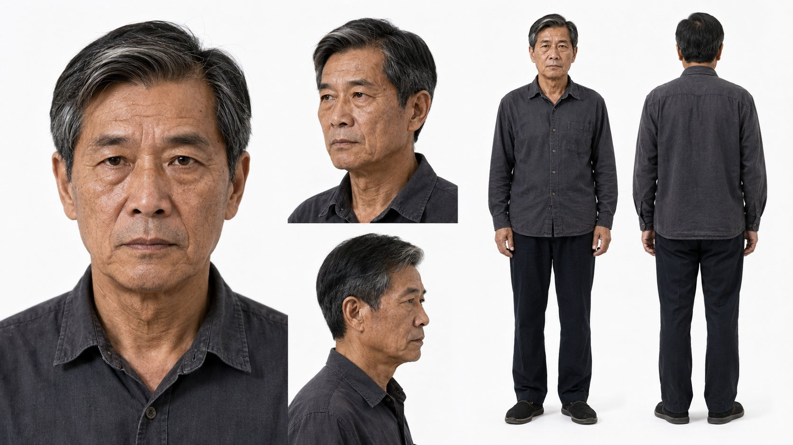
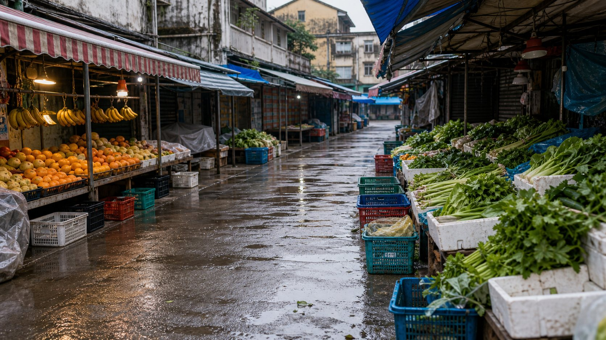
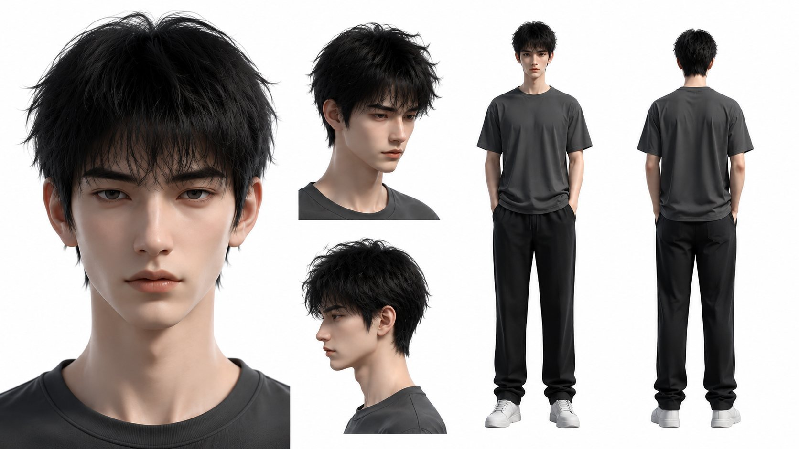
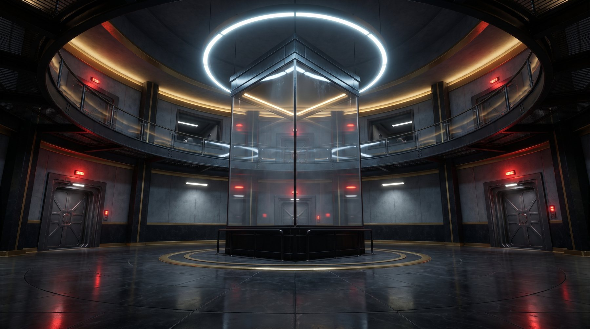
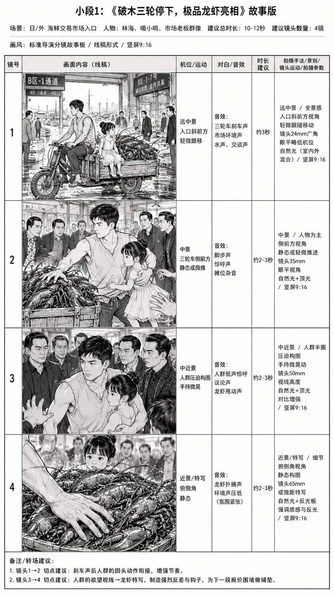
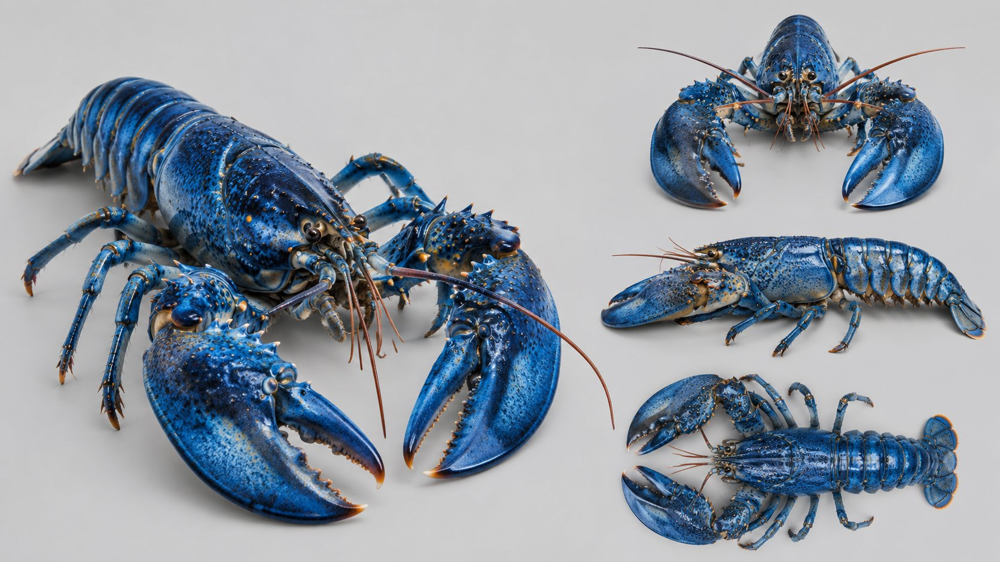

01
9:16 / 01:24
现实情感 / 家庭反转 / AI 漫剧
千万家产
试真情
以千万家产为情感试金石，在家庭关系、身份隐瞒与利益冲突中推进人物选择。 项目建立了覆盖多年龄角色、生活场景与连续剧集的写实资产体系。
44 集内容
115 张视觉资产
118 段视频素材
AI DRAMA · VISUAL DIRECTION · 2026
张佳楠，AI 漫剧导演与视觉设计师。
把剧本、资产、分镜与生成整合成一条可持续的影像生产线。
PROFILE / APPROACH
不只生成画面，更建立生产秩序
从故事理解和资产拆解开始，统一人物、场景、道具与镜头逻辑， 再进入动态生成、声音设计和后期剪辑。目标不是一张漂亮的图， 而是一部能连续讲故事的作品。
SELECTED WORKS / 2026
现实情感 / 家庭反转 / AI 漫剧
以千万家产为情感试金石，在家庭关系、身份隐瞒与利益冲突中推进人物选择。 项目建立了覆盖多年龄角色、生活场景与连续剧集的写实资产体系。
现实穿越 / FPS 世界 / 3D AI 漫剧
现实线与游戏线并行推进，以稳定的角色模型、科幻场景和物资道具搭建世界观。 高光片段覆盖第 38—40 集，集中呈现动作、界面与叙事节奏。
都市逆袭 / 萌宠奇遇 / 概念短片
从龙虾生物设定到竖屏故事板，把市场冲突、奇遇设定和人物反应压缩进高密度短片。 以明确的镜头表推进多角度生成，验证概念到动态画面的快速闭环。
PRODUCTION SYSTEM
从文字到成片的完整路径






ABOUT / CAPABILITIES
AI VISUAL DESIGNER · DRAMA DIRECTOR
拥有 10 年以上 UI/UX、品牌视觉、电商视觉与网页设计经验， 现在专注 AI 漫剧创作和 AIGC 视觉工作流。擅长把审美、商业理解与新工具连接起来， 形成稳定、可复用、能交付的内容生产方式。
OPEN FOR COLLABORATION
有故事、有产品，或者有一个还没被看见的想法？
我们可以从第一帧开始。
NOW PLAYING